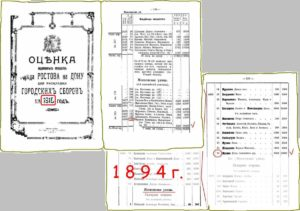

- Конец 1860-х – уездное училище, при котором в качестве низшего отделения существовало приходское училище. Почетным смотрителем училища был городской глава А.М. Байков. Одной из его инициатив было ходатайство об открытии ремесленного класса при приходском училище. Как свидетельствуют документы, здесь начали «обучать ремеслам: столярному, слесарному, переплетному. При этом первоначально за обучение в приходском училище с ремесленным классом плата не взималась». 1867 года «дети граждан, имеющих в городе оседлость, совершенно освобождались от платы, прочие облагались 5 руб. серебром, причем городской глава совместно с блюстителем училища освобождали действительно неимущих от платежа». В последствии по настоянию А.М. Байкова «на содержание училища прибавлена в конце 1867 года – 430 руб.; и тогда же на усиление воспитательной и улучшение хозяйственной частей уездного училища оказано пособие в размере 900 руб. серебром».
- С 1877 г. – уездное мужское училище преобразовали в городское четырехклассное.
- С начала 1890-х — частное учебное заведение 1 разряда статского советника М. А. Папкова «… с отделениями гимназическим, реальным, коммерческим и с пансионом…В учебном заведении преподаются те же предметы и по тем же программам, как и в правительственных среднетехнических заведениях». Немало опытных педагогов собрал в своем частной учебном заведении М.А. Папков. Андрей Семенович Чиненов окончил московское Строгановское училище, преподавал каллиграфию, черчение и рисование. Именно по его инициативе в 1896 году в Ростове открываются Художественные классы. В 1900 году в Российском отделе Всемирной выставки в Париже был удостоен почетного диплома и именной бронзовой медали за новый метод преподавания рисованию и за создание учебных пособий по рисованию в виде систематической коллекции моделей (в дальнейшем образцы экспонируемых моделей приобретает французское министерство народного просвещения).
- С 1906 года — частная мужская гимназия Н. П. Степанова. Николай Павлович Степанов учительствовал в Ростове с 1881 года, после окончания Санкт-Петербургского историко-филологического института, преподавал русский язык и словесность в казенной гимназии. Затем учредил частную гимназию, в короткое время собрал коллектив педагогов-единомышленников, благодаря которому она стала лучшей в городе. Позднее, в 1914 году, для неё возводится четырёхэтажное здание на углу Соборного и Горького (ныне гимназия 36).
- С 1912 года — частная женская гимназия П. Х. Тертерьян с пансионом и детским садом.
- С 1918 года гимназия на базе начального училища, которое в предреволюционные годы возглавлял Илья Григорьевич Шершевский.
- 1921 год – гимназия преобразована и переименована в советскую трудовую школу № 96 первой ступени (директор — И. Г. Шершевский).
- 1920-е годы — директором школы назначается дочь И.Г. Шершевского, Е.И. Шершевская. От других ростовских школ она отличалась тем, что в ней факультативно преподавался еврейский язык.
- 1926 год — школа-девятилетка им. П. П. Блонского.
- 1936 год — средняя школа № 45 имени «Пятилетка в 4 года»,
- 1937 год – средняя школа № 45 имени С.М. Кирова.
Долгое время преподававший, прекрасный педагог Н. А. Войцель, также организовала и вела школьные литературный и драматический кружки. Благодаря её влиянию, многие из учеников предвоенного поколения проявили свои литературные дарования. Например, Виталий Семин впоследствии стал писателем. Одна из его первых книг «Ласточка-звёздочка», рассказывает о предвоенной жизни города. Читая страницы повести, можно без труда узнать гимназию, в чьих стенах происходит становление души главного героя повести – четырнадцатилетнего Сергея.
Среди выпускников гимназии – герои, погибшие во время Великой Отечественной войны: Герой Советского Союза артиллерист Марк Гаккель, сандружинница полка Народного ополчения Зинаида Козлова, миномётчик Дмитрий Бадальян, партизан Григорий Шмуйловский, подводник В. Кулис, радист В. Браусевич, военврач Т. Фельдман, моряк М. Гирштейн и многие другие.
- С конца 1940-х до середины 1950-х гг. – женская школа. В здании уцелевшем во время бомбардировок города уже в 1944 году начались занятия.
- С конца 1950-х гг. – школа со смешанным обучением. Первый послевоенный директор – А.И. Донникова проработала здесь еще долгие годы и впоследствии получила звание народного учителя РСФСР.
- С 1969 г. – средняя школа № 45 имени С.М. Кирова с углубленным изучением французского языка (французский язык преподавался во всех учебных заведениях, составивших историю современной гимназии).
- 1997 г. — на основании Постановления Мэра города Ростова-на-Дону от 17.09.1997 № 1744 «О реорганизации муниципальной общеобразовательной средней школы № 45 с углубленным изучением иностранного языка в муниципальное общеобразовательное учреждение гимназию № 45» муниципальная средняя общеобразовательная школа № 45 с углубленным изучением иностранного языка реорганизована в Муниципальное общеобразовательное учреждение гимназию № 45 Кировского района г.Ростова-на-Дону.
На этой странице Вы можете прочитать статью, написанную Л.Черняевой и А.Овчинникоым о здании Гимназии №45, размещенную на портале http://www.rostovbereg.ru.
Прежде всего несколько примечаний:
Материал статьи является работой авторского мини-коллектива, собирался воедино и редактировался совместно и, как нам кажется, является удачным продуктом совместного труда работника музея и любителя истории города. Мы не задавались целью представить здесь всей истории здания, а описали лишь её дореволюционную часть. О причинах этого будет понятно в окончании статьи.
*Просим при прочтении этого материала внимательно разграничивать по тексту фактический материал и тот, к которому авторами добавлено понятие «вероятно» и другие подобные этому, тем самым не считать всё за абсолютную истину и не становиться в дальнейшем автором слухов и новых легенд «из истории Ростова». Их у нас и так хватает;
** Информация о событиях и датах во многих местах выложена без подробного указания источников по собственным «политическим» соображениям, однако, при возникновении у конкретных лиц интереса к ним, обещаем поделиться этой информацией в личной переписке.
С уважением ко всем читателям: Л.Черняева и А.Овчинников
Старейшее учебное заведение города, а вернее, сохранившееся до наших дней старейшее здание в котором почти всегда находились учебные (и не только) заведения. Здание довольно большое для середины 19 века, расположено на восточной стороне, изначально почти окраине города. Хотя, нельзя не сказать, что эта окраина всегда была деловой. Самый первый перспективный план развития города, утвержденный в 1811 году, заканчивает территорию города западной стороной сегодняшнего Ворошиловского проспекта, хотя, фактически, уже тогда город имел продолжение на восток. Это было поселение в границах т.н. Богатого источника, но это была большей частью не организованная, стихийная, как сказали бы сегодня, «самозастроечная» территория и поэтому мы знаем на этот период времени только те границы города, что были изображены на названном плане.

Итак, на плане 1811 года, совсем рядом с интересующим нас зданием, в соседнем квартале, южнее, в границах сегодняшних улиц Станиславского и Обороны, была запланирована постройка здания городской «Почтовой конторы» (северо-восточный угол квартала). Вероятно, она здесь, и в самом деле потом появилась, на что указывает старое название сегодняшней улицы Станиславского, как улицы Почтовой. Позже, когда почта переселилась в другое здание (сейчас на его месте стоит Пединститут), Почтовым назвали переулок, сегодня называемый именем Островского, а улица Почтовая, стала Старо-Почтовой. Соседство с почтовой конторой подтверждается и на плане, переизданном в 1839 году в приложении к «Своду законов Российской империи». Город активно развивался, и поселение у Богатого колодезя так же росло, а на границе этих территорий возникла, вероятно*, сначала торговая площадка, а позже её обустроили в т.н. площадь Нового Базара. Сегодня эта площадь занята площадью Советов и зданием бывшего дома Советов. Эта информация нам позже будет необходима, т.к. Новый базар ещё станет для нас ориентиром при разборе исторических материалов, а дом Мухина выходил как раз на линию западной границы этой площади.
Почти весь конец 19 века в соседнем здании выше по Ворошиловскому, со стороны Московской улицы, в доме Чугаева (сегодня территория швейной фабрики), находилось другое учебное заведение — Мореходные классы, сегодняшняя «Мореходка имени Г.Я.Седова», переехавшая на границе 19 и 20 веков в собственное здание на ул. Верхне-Бульварную.
Теперь о самом здании сегодняшней гимназии.
По книгам оценок городской недвижимости, в конце 19 и начале 20 веков дом принадлежал купцу 1-й гильдии Петру Дмитриевичу Мухину и его (с 1913 года) наследникам. Стоимость здания за последнее время не изменялась, что значит, что оно уже давно оформилось в цельное домовладение.
Та разница вдвое по т.н. «оценке здания», что мы видим, сравнивая страницы книг за разные годы, возникла в силу того, что в 1904 году, произошла всеобщая переоценка недвижимости в 2 раза для всей городской недвижимости. С развитием города нумерация домов изменялась, что здесь так же видно.
История дома начинается с 1859 года**, когда дворянка, Александра Александровна Третьякова, жена Губернского секретаря Третьякова Феофана Дмитриевича, построила на площадке, доставшейся ей по «купчей крепости» от 1855 г., это самое здание. В его описании в документе, по которому здание переходило к Донскому казаку Дмитрию Ивановичу Мухину, это был «каменный тридцатиоконный, в два с половиною этажа угловой, ….».
С 18.12.1880 года «по духовному завещанию» дом переходит к единственному сыну Дмитрия Ивановича Мухина – Петру Дмитриевичу. А в 1913 году, после его смерти к жене последнего – Екатерине Филипповне Мухиной.
О корнях рода Мухиных информации практически нет. Пётр Дмитриевич Мухин, как и его отец, был лесопромышленником. Он доставлял на берег Дона лес и устраивал его, вероятно, первичную переработку. Свидетельством тому может быть ряд разрозненной информации о месторасположении его лесопильных предприятий. А были они какое-то время на правом берегу Дона в границах станицы Гниловской, в другое время, это была ростовская пристань, рядом с территорией т.н. «рыбной косынки», сравнительно небольшой площадки, обустроенной на берегу для рыбной торговли. «Косынка» — это мыс, где в Дон впадает р. Темерник, на его левом и Донском правом берегах, а заведение П.Д. Мухина было выше по течению, условно, в районе сегодняшнего Халтуринского переулка, рядом с заводом другого лесопромышленника, купца Максимова (на месте его завода сегодня работает мебельная фабрика «Дончанка»).
(фото – сюрприз для моего соавтора. Она их ещё не видела, но честно сказать, всего лишь потому, что я просто забыл про них). Это как память времени – так же, как и 100 лет назад, лежащие брёвна на Береговой, правда, снимки от 1970 года.
Владелец дома постоянно проживал в Аксае (тогда станице Аксайской) и Ростове в собственном доме на углу нынешних Газетного переулка и Б.Садовой улицы.
(фото 1911 года)
В Аксайской Пётр Дмитриевич Мухин был Почётным блюстителем мужского приходского училища (инф. 1886 года), при этом в Ростове Мухин с 1895 г. избирался кандидатом в члены Городской Думы.
Здание, приобретённое Д.И. Мухиным от первого владельца до времени окончательного утверждения его стоимости, пережило и ремонты и реконструкции. Так решением от 27 апреля 1890 года, новому владельцу — наследнику приобретателя, Петру Мухину было дозволено произвести переделку «двухэтажного дома …».
Решением от 29. Июня 1890-го, Петру Мухину, в границах его домовладения, была дозволена «постройка одноэтажных каменных магазинов»; были и другие решения …
Теперь, после уточнения всех имён домовладения и истории существования здания, о том, как здание использовалось владельцами. Первым замеченным и наиболее длительным упоминанием здания в печатных изданиях, является титульная страница первой регулярной еженедельной Ростовской газеты «Ведомости Ростовской на Дону Городской Думы», позже «…Управы».
Газета начала свою жизнь с 1865 года. Мы не располагаем видом этой газеты самого первого выпуска, но в газете от 1866 года на её титуле сказано:
«Подписка и получение в настоящем году Ведомостей Ростовской (на Дону) Городской Думы, принимается в Редакции Ведомостей, помещающейся на углу Московской улицы, по Новой площади, в доме Мухина – где комитет Донских Гирл» (последнее уже из 1867 года). Издательство газеты помещалось здесь до середины 1870-х годов, принадлежало оно Иосифу Рисичу Холеву, купцу 1-й гильдии (лицу не ростовского, а вероятно, столичного, происхождения).
Изначально город Ростов на Дону не являлся частью области Войска Донского, а территориально принадлежал к Екатеринославской губернии, поэтому историю города правильнее просматривать по документам и справочникам именно этой губернии. В материалах «Памятной книги Екатеринославской губернии 1875 г.» говорится, что «Типография потомственного почётного гражданина Холева существует с 1860 года. Производит работы на ручных станках». Приступив к издательской деятельности, владелец счёл необходимым поднять производительность типографии, и в 1866 году в газете было опубликовано его обращение к «своим возможным клиентам, и в первую очередь органам городского самоуправления, банкам и т.п. своё предложение размещать заказы на печатные работы по цене вдвое ниже, чем другие. Обещание это было подкреплено наличием в его типографии новой скоропечатной машины и заказом ещё одной. В этом же 1866 г. им были заказаны необходимые материалы для литографии». Впрочем, нужно сказать и другое. Здесь располагалась контора типографии и издательство газеты, а сама типография была неподалёку отсюда, в другом доме. Здесь же арендовала площади другая типография, ростовского купца Абрама Моисеевича Гордона. Открыл он её в 1879 году, правда, в ближайшее десятилетие переехал отсюда на другой адрес. Печатные заведения были лишь частью того, что известно о здании. Судя по найденным материалам, дом активно использовался владельцем как доходный. В газете за 12 сентября 1871 года было размещено объявление о том, что по адресу дома Мухина на Московской улице находится новый «Модный Магазин А.Эммера с товарами из Берлина». Магазин располагался на первом этаже дома. Это же объявление даёт информацию об ещё одном «квартиранте» дома – гостинице «Европа», занимавшей оба этажа здания. По информации 1875 года здесь располагается Коммерческий банк, руководимый видным ростовским промышленником Петром Романовичем Максимовым. Долго банк здесь не находился, и в 1878 году он располагался по другому адресу. Возможно, причиной этого стало событие, описанное в 1876 году, газетным сообщением: «В ночь с 29 по 30 января сильным ветром сорвало конец крыши в доме Купца Мухина, где помещается Коммерческий Банк» (газета «Донская пчела» №3 от 8.02.1876 г.). Хотя, конечно, это лишь предположение**.
Не позже, чем с 1875 года в здании располагается аптека Якутовича. В 1878 г. её сменила аптека Гольма. Аптеки вообще просуществовали здесь долго. В 1893 году при «Азово-Донской аптеке» в доме Мухина организован пункт неотложной медицинской помощи – «ночные дежурства врачей», в 1895 г. здесь находится аптека Файнгольда М.И., ….
1880 г. – косвенная информация: В этом доме располагается контора купца Когана Григория Ефимовича, члена Ростовской Земской управы. Здесь же он и сам жил. Информация из справочника о составе и местах проживания членов Земской Управы.
В конце 19 века в газетах того времени было множество сведений об арендаторах в д. Мухина по ул. Московской. Чтобы не путать читателя, хочется уточнить один факт: по ул. Московской у Мухиных было два дома. Угловой дом, по Большому проспекту (нынешний Ворошиловский) занимал Петр Дмитриевич Мухин – его старый адрес ул. Московская №124, а чуть дальше, по ул. Московской №120 был другой доходный дом, но уже Ивана Ивановича Мухина. Поэтому если в источниках нет точного номера дома по Московской или инициалов владельца дома, то сказать со стопроцентной уверенностью, что тот или иной магазин находился в доме Мухина по Большому проспекту мы не можем.
Как бы там ни было, в одном из домов, принадлежащих Мухиным, в 1895 г. были расположены спиртоочистительный завод и водочный склад Трахтерова Пантелея Иосифовича, розничный мелочной магазин Астаржиевой Репсиме Артемовны, розничный мануфактурный магазин Полтавцевой Екатерины Павловны и Кобылина Карабета Мартеросовича, такой же магазин Фодорова М.В., магазин готового платья Теликова Шагина Ованесовича, починочная мастерская швейных машин Э.Теплава.. В 1899 году, здесь появляется магазин мучной торговли супругов Рувинских М.Л. и Б.И. Информацию об арендаторах можно продолжать очень большим списком, но как видно, большого смысла в этом нет. Главное, из представленного уже видно, что дом на углу Московской, Большого и Старо-Почтовой, был самым настоящим доходным домом и активно использовался всё время.
Наконец, блок информации об учреждениях воспитательных и образовательных:
1878…1893 – «в доме Мухина на площади Нового Базара» располагаются Музыкальные классы местного музыкального общества;
1891 г. – здесь открывается частное учебное заведение 1-го разряда для мальчиков статского советника Михаила Александровича Папкова.
Училище пробыло здесь до 1894 или 95 года.
1906 Март. «С разрешения министра народного просвещения в Ростове на Дону преподавателем мужской гимназии Н.П. Степановым, открывается Прогимназия…
Это заведение существовало в стенах дома Мухина до 1912 г. (включительно). В этом году оно вновь было открыто в собственном здании на Сенной (сегодня ул. Горького). Новое учебное заведение, занявшее здание в этом же 1912 году, женская гимназия П.Х. Тертерьян (правильнее «Тер-Терьян»).

Реклама училища говорит: «При училище детский сад и пансион…» Гимназия имела младшие и средние приготовительные группы. Однако, пожалуй, самое знаковое для этого училища было то, что своим адресом оно уже объявляло не ул. Московскую или угол Московской и Большого, а непосредственно Большой проспект, как и расположенное в нём сегодня учебное заведение.
Постоянные и временные арендаторы не очень заботились о культуре его содержания, что повлекло за собой наказание П.Д. Мухина в ноябре 1891 года в виде штрафа в размере 6 рублей, «за нарушение санитарных правил».
Многочисленные арендаторы сменяли друг друга, иногда здание было почти невостребованным, и тогда появлялись объявления наподобие того, что было опубликовано в газете от 8 февраля 1882 года. «Отдаётся в наём дом двухэтажный каменный, под оным подвал с четырьмя на улицы выходами, со всеми надворными службами и огромным двором, состоящий на Новобазарной площади, по Большому проспекту, на углу Московской и Старо-Почтовой улиц, под №82…».
Последняя имеющаяся в нашем распоряжении информация об арендаторах дома относится к 1914 году. Навряд ли, за оставшееся время существования дореволюционной России, за это время могли произойти существенные события или изменения в статусе дома Мухина. Хотя мы в начале статьи и обещали не развивать сюжет далее 1920 года, несмогли не добавить ещё одну очень важную информацию:
Исследователи истории завода Ростсельмаш утверждают, что в период 1925-28-х годов, здесь располагалась, до времени постройки собственного здания, проектная организация «Новостройсельмаш», позже «Сельмашстрой». Организация, занимавшаяся проектированием не сельхозмашин, а самого машиностроительного завода, занимала одну большую комнату на 2-м этаже. Не имея к этому документальных свидетельств, просто ссылаемся на фолиант – трёхтомник, выпущенный заводом: «Ростсельмаш. История, том 1 (1925-48)», изд. «Новая книга», 2003.
Немного технической информации:
Судя по записям в книгах «Оценок», фасадной стороной домовладения была улица Московская, что вполне объяснимо, т.к. в ходе развития города, во времена, когда ул. Большая Садовая, как говорят, ещё именовалась «Загородней», Московская была центральной улицей города. Точное место главного входа в здание сегодня не известно, но наиболее вероятным его местом, был угол Московской и Большого проспекта, выполненный скошенным.
В сравнении сегодняшнего и раннего внешнего вида здания видна серьёзная разница.
Это пара из снимков на начало 20 века и 21-го.
Полностью изменены окна второго этажа. Также, по форме окон, отличается вид по боковым улицам — Московской и Станиславского. Там вообще практически не осталось окон с овальным верхом. Наиболее вероятной причиной этого, конечно же, могла быть война, однако есть кадры аэрофотосъёмки города от мая 1943 года. Там здание отображено абсолютно не пострадавшим от военных действий.
Таким образом, надо полагать, что причиной изменения является вовсе не война, а действия послевоенных строителей – реконструкторов.
В раннем описании «тридцатиоконного» дома вообще много непонятного. Во-первых, это сам факт наличия 30-ти окон в ряд, так как сегодня их по сторонам, выходящим на улицы, только 28. Одноэтажная пристройка к дому по ул. Московской, в то время ещё не входила в домовладение, да и она именно одноэтажная, поэтому окна пристройки не в счёт. Есть и ещё вопросы, но на них мы сейчас не остановимся.
Всё, естественно, требует детального изучения и изучения не любителями истории, а специалистами. Считаем, что иначе и быть не может, т.к. здание бывшего дома купца Мухина, однозначно, является одним из ценнейших исторических и архитектурных памятников города.
А теперь, в оставшемся размере страницы сайта, пара снимков от нашей прогулке по зданию.
Да, от его, постройки 1859 года, осталось очень мало. Вы помните, в тексте было о разрешении выломки кирпичных сводов и их замене другими? Вероятно, речь идёт об вот этом:
Слева потолок подвального этажа в его центральной части, над которым располагается массивная и высокохудожественная чугунная лестница на второй этаж дома. Справа, вероятнее всего и есть то, на что заменили кирпичные своды подвала. Кстати, такой же, железобетонный потолок есть и в здании церкви на Ульяновской, постройки 1910 года. Железобетон входил в моду.
И конечно же, главное, это, как говорят сами преподаватели гимназии, местный памятник истории, внутри здания – парадная чугунная лестница.
На последок:
Очень хочется думать, что не случайно в медкабинете гимназии сегодня стоят на своих 4-х колёсиках вот эти чудесного вида медицинские весы с измерителем роста.
Уж не память ли это времён, когда здесь было устроено «круглосуточное дежурство врачей»?
После этих видов сказать просто больше нечего, да и честно говоря, нет ни какого смысла…
Послесловие:
В современных списках – приложениях к решению городской думы «об объявлении недвижимых памятников истории и культуры г. Ростова под охраной органов местного самоуправления», иначе, «реестре памятников истории города», дом на углу Ворошиловского, Московской и Станиславского, представлен достаточно скромно – «Здание еврейской школы» (документ 1997 года) или немного шире «Доходный дом П.Д. Мухина, в котором находились еврейские учебные заведения» (редакция 2010 года). Такое упоминание вероятно, связано с тем, что в школе в советское время преподавали еврейский язык, только почему-то совсем не думается, что это было тем самым главным и единственным, что можно бы написать о столь историчном здании.
Источники: личные архивы, подарки друзей, ГАРО, ДГПб, интернет